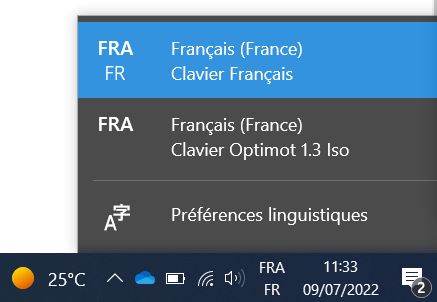

Installer et utiliser #
Étapes d’installation #
L’installation diffère selon l’OS que vous utilisez :
Voir l’installation macOS Voir l’installation Linux Voir l’installation WindowsUtilisation #
TODO ⇒ détailler et intégrer images spécifiques
Sur macOS #
Sur Linux #
Sur Windows #
Optimot est rangé dans vos langues et est accessible :
- Dans la barre des tâches en cliquant sur l’abréviation des langues (ici :
FRA FR), - Par le raccourci
win + espace.
